✈️ 往返航班
09/30
TG639 香港 T1 19:05 → 曼谷 20:45
10/01
TG910 曼谷 00:30 → 希思罗 T2 07:15
曼谷中转约 3小时45分
曼谷中转约 3小时45分
10/07
ZH888 希思罗 T2 22:05 → 深圳 T3 17:10+1
先看大框架，再决定细节
本页不写死温度预测——以下为出发前需自行点开实时链接核对的项目，旧的静态预报已删除，请勿凭记忆判断。
Day6（10/06 七姐妹）关键：出发前一晚及当天早晨各复核一次 Eastbourne / Birling Gap 的风速、阵风、降雨、能见度。若持续风力≥30mph（阵风≥40mph/约6级以上），或有明显降雨、能见度<1km，则放弃悬崖山脊徒步，改为 Cuckmere 河谷平地 + 海滩路线，全程远离崖边至少 3 米；其余按当天实时预报调整外套与撑船安排。
7天全部关键点，按日期颜色区分；点击地图打开 Google Maps 多站路线。
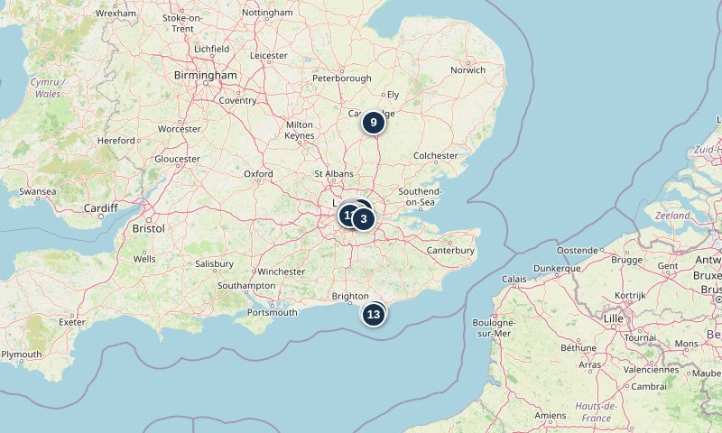
时间连续，按点执行
希思罗 → 天使酒店 → Hackney → 威斯敏斯特
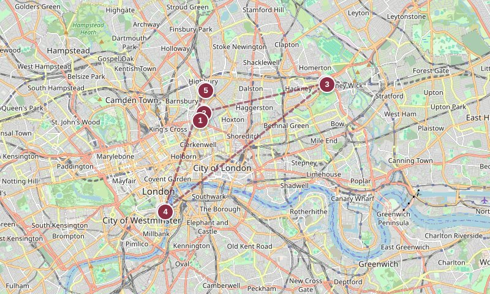
全程刷卡/手机支付，巴士不收现金。
红眼航班落地，预留约 2 小时入境、边检、取行李。本日上午不安排固定时段门票。
先寄存行李，15:00 后再办入住，不等房。短暂整理后出门吃早午餐。
📷 代表性菜品（烤茄子 tahini / 中东沙拉柜台）
主选：柜台点单 deli 形式，人均 £15-20，walk-in 无需订位。红眼航班后别吃太撑。
条件备选：Caravan Islington —— 仅当 Ottolenghi 柜台排队超 20 分钟或招牌沙拉售完时启用。
📷 Chatham Place 门店实拍
官网：Chatham Place Outlet经典风衣、围巾折扣，过季款为主。15:00 左右在 Hackney 咖啡歇脚补体力。
红眼航班后体力回落，坐 30-45 分钟喝咖啡缓一缓，再出发去威斯敏斯特。
议会广场、西敏寺外观、圣詹姆斯公园缓行，等日落机位。18:15 前到 Westminster Bridge 西侧人行道占位。

📷 Diliff via Wikimedia Commons · CC BY-SA 2.5
日落约 18:40，蓝调时刻至约 19:10。河边风大带薄外套。
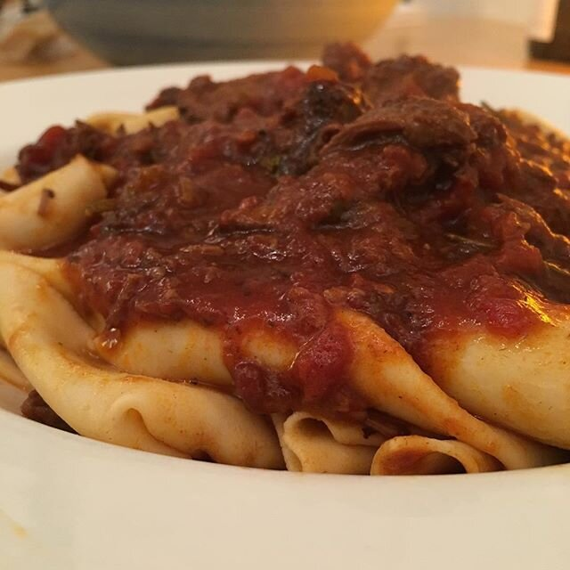
📷 Jeremy Keith via Wikimedia Commons · CC BY 2.0
主选：人均 £50-60，需提前数周 SevenRooms 订位。晚餐后步行回酒店，不再跨区。
条件备选：The 10 Cases（Upper St 葡萄酒吧小份菜）—— 仅当 Trullo 订不到位或到店等位超 40 分钟时启用。Greenwich → 塔桥 → City（Sky Garden 16:15 已订）
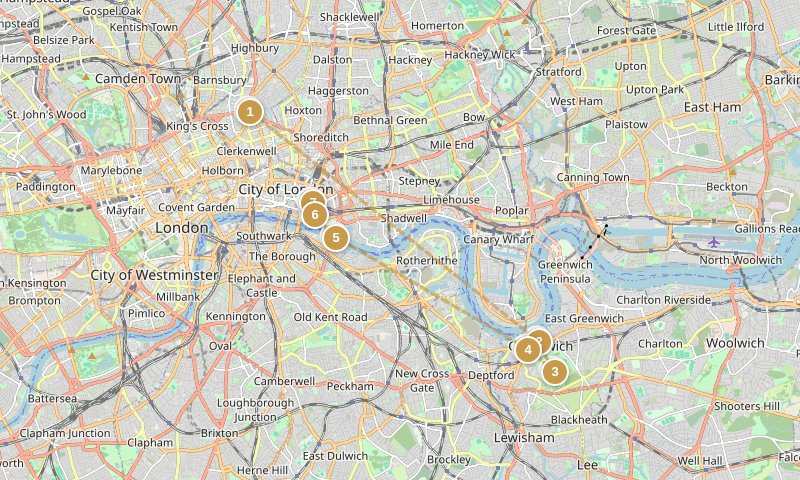
游船支持 contactless，无需现金。
简单早餐后 09:00 出门，今天东南伦敦行程紧凑。
09:30 到站，先逛 Greenwich Market、看卡蒂萨克外观；10:00 开门后入内参观约 40 分钟。

📷 Igor Paszkiewicz / Shutterstock（示意参考图）
参观约 1.5 小时，重点本初子午线、GMT 与伦敦天际线。
主选：百年 pie & mash 老店，人均 £10-13，walk-in 无需订位。控制 45 分钟，后赶船。
条件备选：Greenwich Market 内小吃摊 —— 仅当 Goddards 满座排队超 30 分钟时启用。
📷 Tower Bridge blue hour（示意参考图）
不上塔桥展览，留时间给固定的 Sky Garden。走到桥北侧约 15:15。
15:45 前到 Philpot Lane 入口安检口，带照片证件和电子票，少带大包，场内无现金。

📷 Sky Garden 中庭（示意参考图）
参观约 1 小时。票允许入场时段即 16:15，迟到超 30 分钟可能无法入场。
主选：利德贺市场内维多利亚拱廊，人均 £18-24，walk-in。市场拱廊中央拍对称照。
条件备选：Paxton & Whitfield 热烤奶酪三明治 —— 仅当 Lamb Tavern 排队超 30 分钟时启用。已锁定：Abuelo 早餐 / Rock & Sole 午餐 / Bancone 晚餐
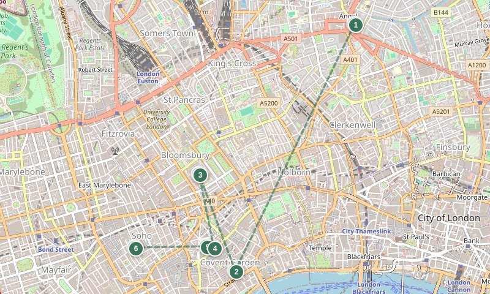
Bancone 只刷卡/手机（cashless）。
不在酒店旁吃，直接地铁去 Covent Garden 吃锁定早餐。
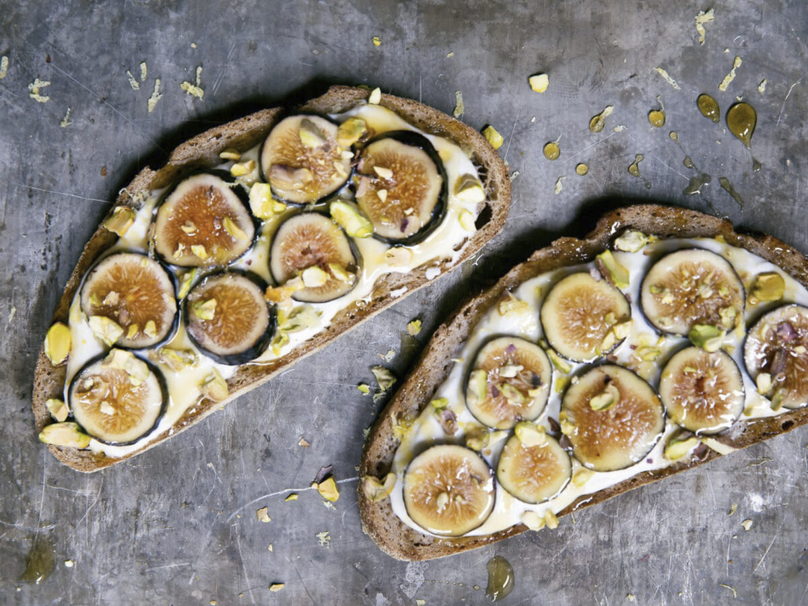
📷 无花果 ricotta 酸面包（示意参考图）
主选（已锁定）：人均 £18-22，空间小建议官网提前订位；08:30 周六需电话确认可早入。
条件备选：The Wolseley —— 仅当 Abuelo 周六 08:30 不营业或订位被改期时启用。
📷 Diliff via Wikimedia Commons · CC BY-SA 3.0
建议顺序：大中庭 → 埃及 → 亚述 → 帕特农 → 木乃伊，不追求全馆通关。

📷 Charles Haynes via Wikimedia Commons · CC BY-SA 2.0
主选（已锁定）：伦敦最老牌炸鱼薯条（1871），人均 £22-26，walk-in 不接受订位，留 60 分钟。
条件备选：Golden Chippy —— 仅当排队超 40 分钟时启用。饭后向西逛彩色庭院，一路顺向走到 Soho，留足下午缓冲。

📷 Bancone 招牌菜实拍
主选（已锁定）：人均 £32-38，须 SevenRooms 提前订位，店内 cashless（只刷卡/手机）。
条件备选：Padella —— 仅当 Bancone 订位变动或满座时启用。King's Cross 当天往返
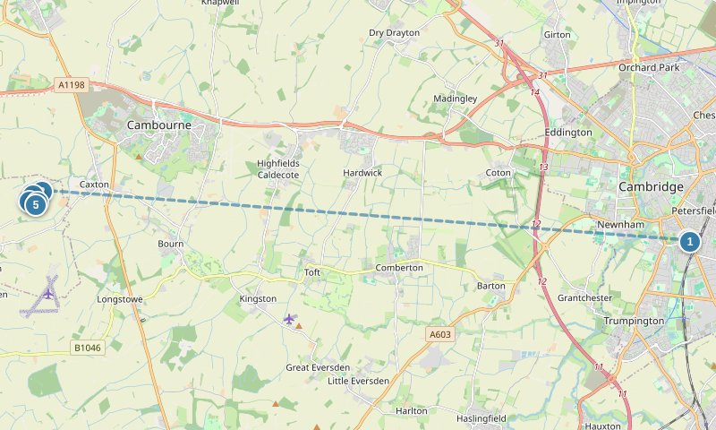
剑桥景点/餐厅均可刷卡。
酒店附近简单早餐，08:15 出发去 King's Cross。
买 Off-Peak Day Return（约 £33.30），周日全天 off-peak；预留找站台时间。

📷 Martinvl via Wikimedia Commons · CC BY-SA 4.0
先外观慢走。若国王学院当天上午开放则入内；学期中周日可能只开午后，则留到午餐后。
主选：DNA 双螺旋名店，人均 £18-24，walk-in（周日较热闹）。
条件备选：Pint Shop —— 仅当 The Eagle 无座排队超 30 分钟时启用。
📷 Petecarney via Wikimedia Commons · 经典 Chelsea bun · CC BY-SA 3.0
主选：人均 £8-12，柜台 walk-in。若国王学院午后开放，可在此后插入参观。
条件备选：Fitzbillies 另一分店 —— 仅当本店门口排长队时启用。
📷 Peter Trimming via Wikimedia Commons · CC BY-SA 2.0
约 45-50 分钟，认准 Scudamore's（Mill Lane），别跟 King's Parade 街头拉客。拼船带讲解约 £20-35/人。
主选：人均 £12-18（饮品+小食），walk-in，露台位看河。
条件备选：The Granta（Mill Pond）—— 仅当露台满座或天气差时启用。预留购票/找站台缓冲，乘 17:30 左右直达车回 King's Cross。
主选：回 Angel 后步行可达，人均 £30-38，建议提前订位。不跨区。
条件备选：The Albion —— 仅当 The 10 Cases 满座时启用。Angel → Marylebone → Knightsbridge
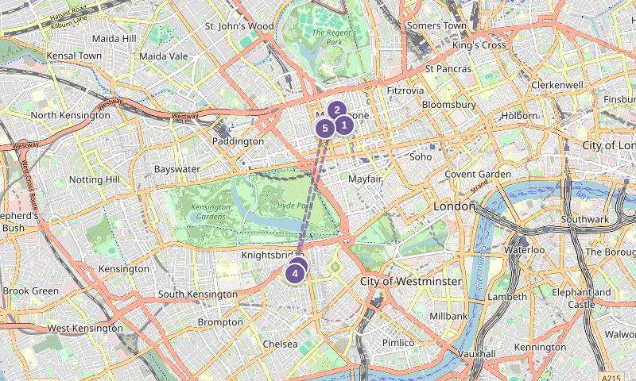
Harrods 全刷卡。
整理行李退房，10:00 出发搬去新酒店。
先寄存行李（15:00 后才正式入住），轻装去午餐。

📷 The BoTree 外观（示意参考图）
主选：澳式早午餐名店，人均 £25-32，日间 walk-in（17:00 后才可订位）。
条件备选：Fischer's（提前到则改早午餐）—— 仅当 Granger 排队超 30 分钟时启用。
📷 Dietmar Rabich via Wikimedia Commons · CC BY-SA 4.0
周一可逛到 20:00，时间宽裕。15:30 前离场去 ALBA。
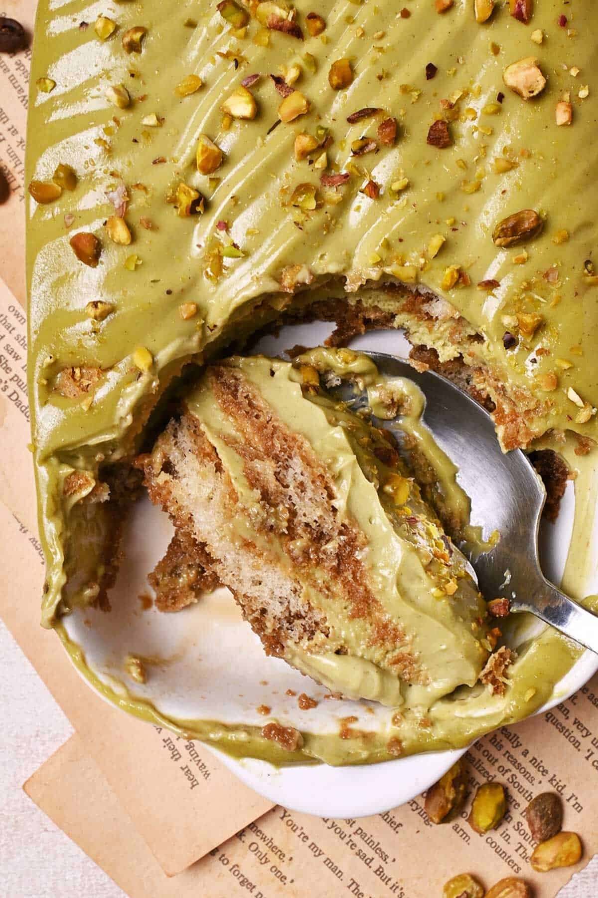
📷 开心果提拉米苏（示意参考图）
主选（已锁定）：人均 £10-14，甜品店 walk-in；只吃甜品和咖啡，门店地址与营业时间官网确认。
条件备选：Harrods 自营甜品台 —— 仅当 ALBA 当天临时休息时启用。15:00 后已可入住 The BoTree，放下东西稍作休息，晚餐不跨区。
主选：人均 £45-60，建议提前订位。不跨区、不喝太晚，第二天白崖早起。
条件备选：Fischer's（维也纳菜）—— 仅当 The Hart 订不到位时启用。East Sussex 风景一日游（周二工作日巴士 12/12A/12X）
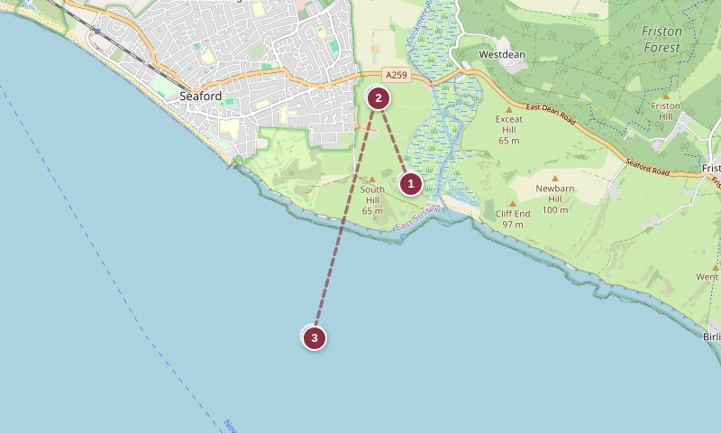
出发前一晚查预报：持续风力≥30mph（阵风≥40mph）或降雨明显、能见度<1km 时，放弃悬崖山脊徒步，改 Cuckmere 河谷平地+海滩，远离崖边。
今天是长途风景日，带防风防水外套、水、少量现金；07:30 出门。
周二工作日 off-peak 以 09:30 后为界；在站里早餐、买 Off-Peak Day Return，乘约 09:30 班次。

📷 StephenDawson via Wikimedia Commons · CC BY-SA 2.0
先在河谷平地热身观景，午餐后再决定是否翻山脊。

📷 Acabashi via Wikimedia Commons · 招牌 steak & ale pie · CC BY-SA 4.0
主选：河畔露台、十月壁炉，人均 £16-22，周末/旺季建议提前电话订位。
条件备选：Seven Sisters 游客中心咖啡馆 —— 仅当 Cuckmere Inn 客满无位时启用。
📷 Arild Vågen via Wikimedia Commons · CC BY-SA 4.0
山脊徒步终点。这里手机信号弱，上车前已约好回程出租；16:30 前开始返程，避免天黑后在步道。
回到镇中心咖啡/简餐休整，等 18:30 左右火车回 Victoria。
Marylebone → Regent's Park → 希思罗 T2（22:05 航班）
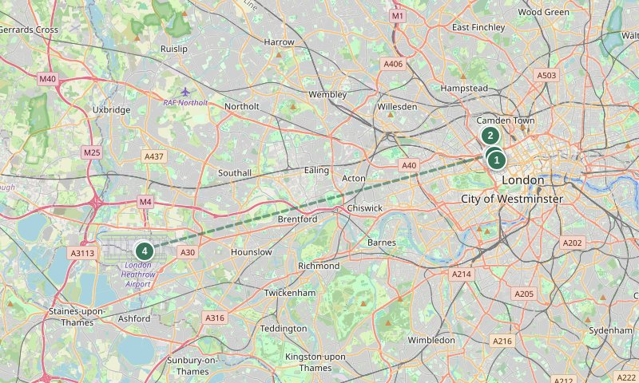
全程刷卡，机场留少量现金应急。
最后一天不把行李带去景点，寄存在 The BoTree。

📷 pam fray via Geograph / Wikimedia Commons · CC BY-SA 2.0
花园、湖景与秋色；从酒店往北即到，不去东伦敦折返。

📷 Anthony O'Neil via Geograph / Wikimedia Commons · CC BY-SA 2.0
主选：人均 £35-45，建议提前订位。餐后 Marylebone High St 可最后扫货。
条件备选：Granger & Co（午餐时段）—— 仅当 Fischer's 满座时启用。独立小店、书店、花店最后扫货，下午留充分缓冲去机场。
检查护照、退税材料、充电设备和随身行李，步行到 Bond Street Elizabeth line 站。
为 22:05 起飞留足 3 小时：值机、退税、安检、免税店。ZH888 希思罗 T2 22:05 → 深圳 T3。
只锁定真正需要的项目
这是整套路线顺畅的前提，避免白崖当天换酒店。
选 10/03 10:00 左右；免费但建议预约。
10 月起 10:00-17:00，最后入场 16:15；建议官网提前定时票，联票（含卡蒂萨克）£38。
带照片证件和电子票，15:45 前到 Philpot Lane 安检口。
周四晚热门，提前数周在 SevenRooms 订约 19:45；红眼航班日不赶路。
Bancone 须 SevenRooms 订位（cashless）；Abuelo 08:30 周六需电话确认开门。
先看天气趋势再订可改签选择；出发前必查国王学院周日开放时间。只从正规运营商购票。
出发前 7-10 天结合天气订 off-peak；上车前电话约好 Birling Gap 回程出租。
勾选状态保存在本机